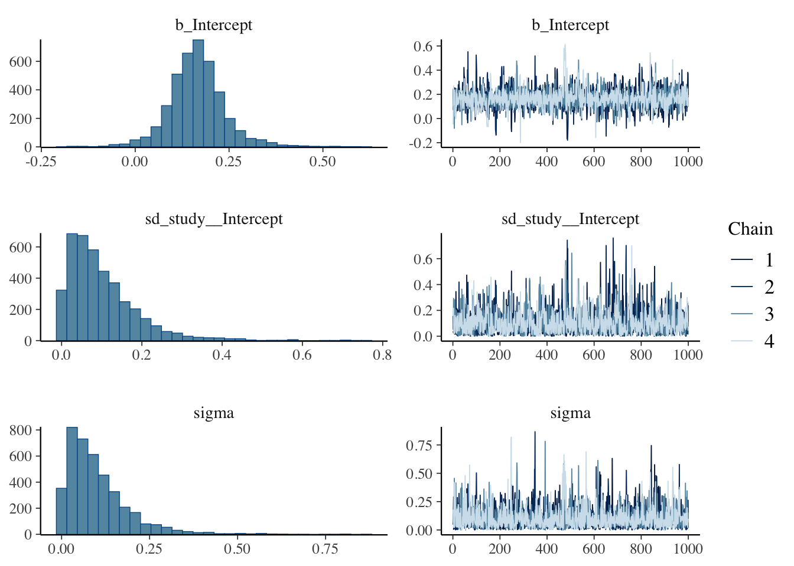
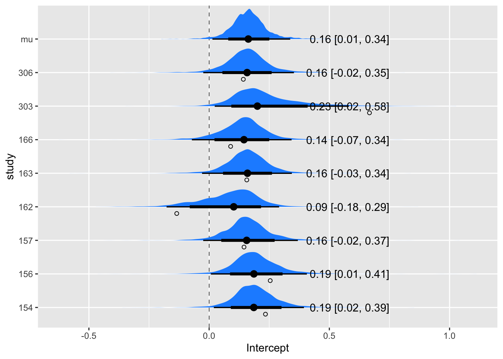

library(tidyverse)
library(brms)
library(tidybayes)
library(ggdist)Bayesian Analysis with brms
in our previous post, Examining Meta Analysis we contrasted a frequentist version of a meta analysis conducted with R’s meta package with a Bayesian meta analysis done mostly in stan using R's rstan package as a front end. We did this to hint at the difference between working within the restricted confines of a traditional frequentist framework and the amazing freedom to set up and solve complex probabilistic models using a modern Bayesian engine like stan. However, we fully acknowledge the cognitive burden of learning a completely new language and at the same time also learning Bayesian methods.
In this post, we will ease your anxiety by pointing to a middle way, by using the well established and powerful package brms to formulate stan models.
Meta-Analysis Models
Read the Data
First, we remind ourselves what the data look like. nE is the number of subjects in the treatment arm for each Protocol, meanE is sample treatment mean that was calculated for each protocol, varE is the observed sample variance for each protocol and nC, meanC, and varC are the statistics for the control arm. (Note we will refer to Protocol as study from now on.)
angina <- read_csv(file = "Amlodipine.csv", col_types = c("c",rep(c("i","d","d"),2)))
angina# A tibble: 8 × 7
Protocol nE meanE varE nC meanC varC
<chr> <dbl> <dbl> <dbl> <dbl> <dbl> <dbl>
1 154 46 0.232 0.225 48 -0.0027 0.0007
2 156 30 0.281 0.144 26 0.027 0.114
3 157 75 0.189 0.198 72 0.0443 0.497
4 162 12 0.093 0.139 12 0.228 0.0488
5 163 32 0.162 0.0961 34 0.0056 0.0955
6 166 31 0.184 0.125 31 0.0943 0.173
7 303 27 0.661 0.706 27 -0.0057 0.989
8 306 46 0.137 0.121 47 -0.0057 0.129 Review The Model
As in the previous post, we will measure the effect of the amlodipine treatment by looking at the difference in the observed means from the two arms of the study. Our model can be expressed as :
\[\delta_i = \theta + \nu_i + \epsilon\] where for each study, i, \(\delta_i\), the observed treatment effect, is the mean of the control arm subtracted from the mean of the treatment arm.
\[\theta_i = \theta_{Ei} - \theta_{Ci}\] \[ \theta_i \sim N(\theta, \tau)\]
\(\nu_i\) is the group effect from each study
\[ \nu_i \sim N\left( \theta_i, \sqrt{\frac{\sigma_{Ei}^2}{n_{Ei}}+\frac{\sigma_{Ci}^2}{n_{Ci}}} \right)\]
and \(\epsilon_i\) is random noise:
\[\epsilon \sim N(0, \sigma)\].
The data include \(\hat\theta_E\) = meanE and \(\hat\sigma^2_E\) = varE and the corresponding parameters for the control arm.
With this we have that \(\theta\) is distributed as:
\[ \delta_i \sim N\left(\theta +\theta_i \;,\; \sqrt{\frac{\sigma_E^2}{n_E} + \frac{\sigma_C^2}{n_C}} + \sigma\right)\]
brms Syntax
Although it is much simpler than using stan directly, brms is not without its own cognitive load. Any complex ‘R’ package, or for that matter, any sophisticated function written in an language you like requires taking time to understand how it works in order to use it confidently and correctly. At a minimum, it is necessary to fully comprehend the function signature and all of the options implicitly coded therein.
A good bit of the cognitive load associated with brms is associated with the formula interface which it adopts form the lmw4 package for formulating and solving frequentist mixed-effects models. brms builds on this syntax to allow formulating expressions to set up complex, multilevel models.
The general formula argument^1 is structured as response | aterms ~ pterms + (gterms | group). Everything on the right side of ∼ specifies predictors. + is used to separate different effects from each other.
aterms
The aterms are optional terms that provide special information about the response variable. Especially helpful for meta-analysis the term se specifies the standard errors of the response variable when response is a treatment effect. The pdf states:
Suppose that the variable yi contains the effect sizes from the studies and sei the corresponding standard errors. Then, fixed and random effects meta-analyses can be conducted using the formulas yi | se(sei) ~ 1 and yi | se(sei) ~ 1 + (1|study), respectively, where study is a variable uniquely identifying every study. … By default, the standard errors replace the parameter sigma. To model sigma in addition to the known standard errors, set argument sigma in function se to TRUE, for instance, yi | se(sei, sigma = TRUE) ~ 1.
pterms
pterms are population level terms. Everything on the right side of formula that is not recognized as part of a group-level term is treated as a population-level effect.
gterms
gterms are group level terms that are specified as (coefs | group) where coefs contains one or more variables whose effects are assumed to vary with the levels of the grouping factor. For example, if both a group intercept and subject age vary by group, the group effects would be specified by (1 + age | group). Note that it is possble to specify multiple grouping factors each with multiple group-level coefficients.
Set up the model using the brms package
First we read in the data using dplyr , add delta_i the difference in means and its standard error, se_di, rename Protocol to study for convenience, and drop the variables we no longer need.
df <- angina %>% mutate(delta_i = (meanE - meanC), se_di = sqrt(varE/nE + varC/nC)) %>%
rename(study = Protocol) %>%
select(study, delta_i, se_di, nE,nC)
head(df)# A tibble: 6 × 5
study delta_i se_di nE nC
<chr> <dbl> <dbl> <dbl> <dbl>
1 154 0.234 0.0701 46 48
2 156 0.254 0.0958 30 26
3 157 0.145 0.0977 75 72
4 162 -0.135 0.125 12 12
5 163 0.157 0.0762 32 34
6 166 0.0894 0.0980 31 31Fit the model
Note that we are using the aterm se to inform the brm() vunction about varE and varC. This is associated with the sigma = TRUE indicates that the residual standard deviation parameter sigma should be included in addition to the known measurement error, and prior is an alias for the set_prior() function^2.
## Random effects meta-analysis
fit_brms <- brm(
delta_i | se(se_di, sigma = TRUE) ~ 1 + (1 | study),
data = df,
# set priors in stan language
prior = c(prior(normal(0, 1), class = Intercept),
prior(normal(0, 1), class = sd, group = study)),
iter = 2000, warmup = 1000, cores = 4, chains = 4, seed = 14,
control = list(adapt_delta = 0.95))# Save an object to a file
saveRDS(fit_brms, file = "fit_brms.rds")# Restore the object
fit_brms <- readRDS(file = "fit_brms.rds")Look at the model summary
summary(fit_brms) Family: gaussian
Links: mu = identity; sigma = identity
Formula: delta_i | se(se_di, sigma = TRUE) ~ 1 + (1 | study)
Data: df (Number of observations: 8)
Draws: 4 chains, each with iter = 2000; warmup = 1000; thin = 1;
total post-warmup draws = 4000
Multilevel Hyperparameters:
~study (Number of levels: 8)
Estimate Est.Error l-95% CI u-95% CI Rhat Bulk_ESS Tail_ESS
sd(Intercept) 0.10 0.09 0.00 0.33 1.00 1505 2108
Regression Coefficients:
Estimate Est.Error l-95% CI u-95% CI Rhat Bulk_ESS Tail_ESS
Intercept 0.16 0.08 0.01 0.34 1.00 2033 1610
Further Distributional Parameters:
Estimate Est.Error l-95% CI u-95% CI Rhat Bulk_ESS Tail_ESS
sigma 0.10 0.09 0.00 0.33 1.00 2129 1798
Draws were sampled using sampling(NUTS). For each parameter, Bulk_ESS
and Tail_ESS are effective sample size measures, and Rhat is the potential
scale reduction factor on split chains (at convergence, Rhat = 1).plot(fit_brms)
Prepare data frame for individual plots
# Prepare dataframe for plottig
out_indiv <- spread_draws(fit_brms, r_study[study,term], b_Intercept) %>%
mutate(Intercept = r_study + b_Intercept) %>%
mutate(study = as.character(study)) %>%
select(study,term,Intercept)
out_mu <- spread_draws(fit_brms, r_study[study,term], b_Intercept) %>%
mutate(study = "mu") %>%
mutate(Intercept = b_Intercept) %>%
select(study,term,Intercept)
out_all <- bind_rows(out_indiv, out_mu) %>%
mutate(study = factor(study))
out_all %>% ungroup() %>%
# tidybayes garbles names so fix here
mutate(study = str_replace_all(study, "\\.", " "))# A tibble: 64,000 × 3
study term Intercept
<chr> <chr> <dbl>
1 154 Intercept 0.322
2 154 Intercept 0.254
3 154 Intercept 0.322
4 154 Intercept 0.227
5 154 Intercept 0.149
6 154 Intercept 0.309
7 154 Intercept 0.176
8 154 Intercept 0.258
9 154 Intercept 0.253
10 154 Intercept 0.153
# ℹ 63,990 more rows# Data frame of summary numbers
out_all_sum <- group_by(out_all, study) %>%
mean_qi(Intercept) # provides point and intercept summary for Intercept# Draw plot
out_all %>%
ggplot(aes(Intercept,study)) +
# Zero!
geom_vline(xintercept = 0, linewidth = .25, lty = 2) +
stat_halfeye(.width = c(.8, .95), fill = "dodgerblue") +
# Add text labels
geom_text(
data = mutate_if(out_all_sum, is.numeric, round, 2),
aes(label = str_glue("{Intercept} [{.lower}, {.upper}]"), x = 0.75),
hjust = "inward"
) +
# Observed as empty points
geom_point(
data = df %>% mutate(study = str_replace_all(study, "\\.", " ")),
aes(x=delta_i), position = position_nudge(y = -.2), shape = 1
) 
Matti Vuorre Bayesian Meta-Analysis with R, Stan, and brms Meta-analysis is a special case of Bayesian multilevel modeling
Solomon Kuz, Bayesian meta-analysis in brms
1 See Details under brmsformula in the brms package pdf 2 See Details under set_prior on page 211 of the package pdf.